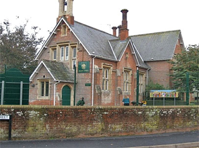

September 2023
It is still hard to believe we did it! Starting with the invitation 16 June from the Historic Chapels Trust to try out our community ideas, setting up East Budleigh Heritage Centre Ltd, signing the License Agreement, the Big Clean, conceiving the four diverse exhibitions proclaimed in the these pages end June, we then had to deliver!
Over the 4 weekends in August we welcomed almost 400 visitors to the new East Budleigh Heritage Centre in Salem Chapel. The events were promoted on the East Budleigh Village Events and Otterton WhatsApp groups, Budleigh Salterton Tourist Information and Visit Devon websites and by interview, even on air by East Devon Radio!
Our Famous Heritage exhibition celebrated the rich village history with Sir Walter Raleigh, Roger Conant and Salem Chapel itself, featuring exhibitions researched, written and produced by six members of the steering group including our dedicated professional curator. These three displays remained throughout August and now form a hopefully permanent exhibition in the upstairs galleries.
Community focused, we make no apologies for the promotion of our SIr Walter Raleigh pub alongside the SWR exhibition! We are grateful for those who bought tickets for our Preview Gala Luncheon and Dinner which financed the cost of one exhibition and to the Roger Conant Group who funded their exhibition.
Our Natural Heritage Exhibition featured the captivating wildlife photos of David White and his four talks were a very significant draw and we were all fascinated by the Beekeepers’ display.
We are grateful to Clinton Devon for the loan of the Pebblebed Heaths and lower Otter Estuary displays for
Our Jurassic Heritage exhibition in the School Room and to the Otter Valley Association (OVA) for their informative displays.
With Our Foodie Heritage 3-day Bank Holiday event we celebrated local producers of preserves, teas, wine, beers, ciders and chocolate to name but a few, and given the dedicated license, were able to enjoy a glass too! Our grateful thanks to the East Budleigh Community Shop for sourcing our goodies and to Otterton Mill for the scones and cream teas devoured with relish!
Given the success of our first session, the steering group unanimously agreed to open again in September with Our Heritage Open Day in support of the national Heritage Day events. Our huge thanks to all who worked to make these exhibitions happen. We unashamedly modeled ourselves on the National Trust, and are very pleased with the outcome. It demonstrates that there is the potential for a bright future for the East Budleigh Heritage Centre in Salem Chapel.
We look forward to the next events: - Our Remembrance Heritage Thursday/Friday 1-3 9/10th and Saturday 11th November 10am-3pm
- Our Christmas Trees Heritage when Salem Chapel welcomes back its traditional Christmas Trees extravaganza! Saturday/Sunday 2/3 December 10am-3pm
We hope you all enjoyed these new opportunities to make connections with our heritage.
To note: we understand that discussions on the long term ownership of the Salem Chapel will now be proceeding following the completion of the structural survey on 29 August. Friends of Friendless Churches are still in the frame and other avenues are also being explored by HCT.
July 2023
Much has been happening to get the East Budleigh Heritage Centre ready for opening in August. A new company East Budleigh Heritage Centre Ltd has signed a License Agreement with the Historic Chapels Trust to operate the heritage centre ensuring it specifically benefits from the HCT public liability insurance. The HCT offered the 6-month license to trial our community ideas. No rent is payable but a sharing of net profits will help cover the building’s costs. There is still no news on progress to find a new owner for the building.
Thank you to the great team who helped clean the Heritage Centre, relocate tables and chairs and test the electric organ. It is looking awesome! We are grateful to the Clinton Devon Estates volunteers for clearing the overgrown courtyard. HCT are organizing a series of utility visits and will carry out routine structural checks over the summer but advise there are no safety concerns.
A big thank you to the teams who have been working on our 4 opening exhibitions for August. From those who have researched, written and printed the storyboards, provided photographs, displays and creative input and to our museum professional Alex Watson-Jones who kindly agreed to give our exhibition texts a sanity check to ensure a high standard across the exhibition.
Thank you especially to our exhibition sponsors who made these exhibitions possible, to the Sir Walter Raleigh pub and to the Roger Conant 400 Group. The storyboards will remain on show throughout the August exhibitions to mid October. The Pre-opening Gala Dinner and Lunch 1st August will also help fund the exhibitions.
In response to the questionnaire suggestions, the EB Heritage Centre is looking to offer informal adult education classes, for 6 weeks in the afternoons September to October. These will cover photography, history, gardening and IT for one hour a week 2.30-3.30pm. There is a lot of knowledge out there and you are willing to share it with others!
Please do come and check out the exhibitions over coffee and tune into BBC Radio Devon on Sunday 30th July at 11.15am to hear about the new Heritage Centre! Please walk or cycle to the Heritage Centre if you can. Cycle parking only available.
5-6th Our Famous Heritage - focus on Raleigh, Conant and Salem chapel itself.
12-13th Our Natural Heritage - Beavers, Bees, Birds, Bats and Butterflies - wildlife photos.
19-20th Our Jurassic Heritage - Pebblebed Heaths, to Budleigh Brook, to the Otter Estuary
26-28th Our Foodie Heritage - Supported by the EB Community Shop and local producers.
June 2023
New Heritage Centre to open in Salem Chapel this summer.
At its first meeting of the steering group on Thursday 22 June, the name “Heritage Society” found favour. The meeting agenda was planned to get down to business and organise the Society’s structure, objectives, business plan and finances in readiness for a hoped-for opening of the Heritage Centre next year.
However only days before the meeting, the Historic Chapels Trust proposed opening the Heritage Centre on a six-month trial basis from this summer. Both parties agreed that the building needs to be clean, and fit for purpose prior to opening. The necessary preparations are underway and are expected to be completed by late July as supported by the new Surveyor and the new Estates Manager. An agreement for the use of the building is being reviewed and will specifically benefit from the HCT public liability insurance.
The current plan is based on soft opening of the Heritage Centre each weekend in August along the following lines:
5-6th Our Famous Heritage - focus on Raleigh, Conant and Salem chapel itself.
12-13th Our Natural Heritage - Bees, Birds and Bats - and wildlife photos.
19-20th Our Jurassic Heritage - Pebblebed Heath, to Budleigh Brook, to Lower Estuary
26-28 Our Foodie Heritage - 3-day bank holiday weekend. Supported by local producers and businesses.
Meanwhile the steering group will revise the Heritage Centre vision proposals in accordance with the questionnaire outcomes. The main changes will be to reflect the conclusions of the public consultation that the village is not seeking to take ownership and responsibility for maintenance of the chapel but to achieve use as a community Heritage Centre, and to include the inspired questionnaire suggestions for its use. The revised proposals have been requested by the Historic Chapels Trust, now managed by the Churches Conservation Trust.
September 2023
The East Budleigh History Society met on Monday 18 September at 1.30pm at the Sir Walter Raleigh pub.
The meeting reflected on the success of their first season at the new East Budleigh Heritage Centre. The displays for Our Famous Heritage on Sir Walter Raleigh, Roger Conant and Salem Chapel had been produced to a high standard with oversight from our professional curator and will hopefully remain as permanent exhibitions upstairs at gallery level. Our thanks to Kathy and Maria (Raleigh), Marj (Salem), Ian (Conant), Stephen and Alex (. ).
Following a very kind donation, thank you Mary, we were able to start a lace exhibition which is certainly destined to grow. Salem Chapel itself was the main focus of Our Heritage Open Day in September.
The meeting wholeheartedly supported a proposal for a Remembrance Day event on Saturday 11 November at the Heritage Centre. The History Society is inviting people in the village to also remember their own family members by telling their stories. If you have a family story to tell, maybe a father/mother or grandfather/mother’s war experience, perhaps photos/medals and would like to contribute to the Remembrance event, please do come along to our next meeting on Monday 9th October at 1.30pm in the SWR pub and we can help you to display your Remembrance. Remembrance event:
- Thursday/Friday 9/10 November 1-3pm
- Saturday 11 November 10am - 3pm
June 2023
The East Budleigh History Group met on Monday 12 June and decided to adopt the name East Budleigh History Society.
The initiative for the Heritage Centre questionnaire started with the East Budleigh History Group. Following discussion and consideration of the responses to the Salem Chapel questionnaire, it was agreed that the new Heritage Centre steering committee will be set up as a separate entity. The first meeting of the steering group will be arranged later in June to consider options for community use of the chapel.
The planned visit of the East Budleigh History Society to Topsham Museum is scheduled for Friday 14 July departing from the Hayes Lane car park at 1.30pm. To arrange car share please contact Maria on 0777 321 8582.
April 2023
On 17 April, the East Budleigh History group was delighted to connect by zoom with US-based Ben Shallop, author of “The Founding of Salem, City of Peace” his new book covering the life and times of Roger Conant born here in East Budleigh in 1592 and died in Salem, US in 1679. Our thanks to the 17th Sir Walter Raleigh Pub for hosting us and to the Daniel House, Salem built in 1667 by a sea captain.
A lively discussion was chaired by Maria Malinowska (EB History Club) and Michael Downes from the Roger Conant 400 Group. As a very special feature, Paul Painter sang the East Budleigh Song live to the great delight of both audiences. The song was written for EB’s Got Talent 2019 and shows Roger Conant central to our EB history.
Roger Conant was the youngest of eight children. As well as the mill (near the church hall, see new Blue Plaque) the Conant family held substantial lands proximate to where Sir Walter Raleigh was born in 1552 (40 years before Roger) so the families may have known each other.
Roger left East Budleigh in 1611 aged 18 and joined The Salters Company in the City of London which was both politically and economically powerful. Roger and brother Christopher (joined the Grocers Company) were living in London when Sir Walter Raleigh was beheaded. Did the brothers stand witness?
Roger married Sarah Horton, their first child Sarah was born c1619 (died c1620). Their son Caleb was born in 1622. Christopher and Roger emigrated to North America with their families in 1623. The new land was home to the First Nation people and visited by European fishermen who dried and salted cod. (We prefer the delicious cod and chips served here at the Sir Walter Raleigh!)
In 1623 the Plymouth Colony AND the Dorchester Company were granted rights to build a fish-drying stage at Cape Ann. Incensed, the Plymouth Colony sent an armed expedition under Myles Standish to evict the Dorchester Company’s settlers in June 1625. Mediated by Governor Conant, the fishermen and the Cape Ann colony agreed to build a new fisheries stage for the exclusive use of the Plymouth colony and saved much bloodshed. Roger Conant - The Peace Maker was good with all types of people and viewed the church as an integral part of the community. By 1625 Roger and Sarah had a second son Lot.
Conant moved the new colony a few miles up the coast to Naumkeag (which became Salem) to a fertile river bed with ample fishing, living alongside the First Nation people. Fascinatingly, they shared a field in common to grow crops. Salem means peace.
John Endicott replaced Roger Conant as Governor so Roger and the Old Planters moved up the coast to Beverly. Governor Endicott set up elections, formed a government, which required the Chair to vote with the majority, the first such agreement in the new world and a foundation of the American Constitution.
By 1629 there were some 200 settlers in Salem and a couple dozen Old Settlers under Roger Conant in Beverly. Puritans and West country fishermen arrived and settled in Cape Ann. Fishing communities were founded all along the coast (New England, the birthplace of American democracy).
Conant is elected to the Massachusetts General Court in 1634 and established the right of the Court over the budgets proposed by the Governor, a precedent followed by all US legislature and Governor’s Office to this day.
Roger Conant’s wife Sarah died in 1658. In 1659 Conant petitioned unsuccessfully for Beverly to be renamed Budleigh. Roger Conant died peacefully in his sleep at home in 1679. An amazing man.
March 2023
February 2023
East Budleigh History (EBHG) met on Monday 27 February 2023. Their agreed purpose is to make local history accessible to all people in East Budleigh. The meeting was pleased to welcome Gill Mclean from Topsham Museum to discuss their Acquisition and Disposal Policy and their Collections Development Policy.
The museum started when a lady from London bought the old merchant’s house which has a 19th century sail loft, and local people contributed artefacts. She left the building to Exeter City Council to run as a museum. Topsham Museum Society leases the building from the Council, who are responsible for the repairs. The Society found themselves with the buildings and a very random collection including the contents of the house, so some objects and documents were sold, some kept.
Out of necessity, the Museum developed their Acquisition and Disposal Policy and their Collections Development Policy. Today, Topsham Museum records its collection on its data base and website. All objects are scanned and available digitally for members to research. They have 200 volunteers doing 70 different jobs. Their purpose is to allow members to explore the ‘history of Topsham, its ecology or estuary, with a geographical focus on the old parish of Topsham’. It undertakes outreach talks for residents, families and schools.
Last week, the Museum was offered a 1920/30s egg poacher, some old tins and a carpet beater. Dedicated groups of volunteers look at every object to determine its provenance and if to accept the donation.
Documents/artefacts may be loaned for a season or permanently. The monetary value is assessed for insurance purposes. The transfer of ownership terms vary and the museum may have to refer back to the donor if they want to sell, on a first refusal basis. Benefitting from curatorial advisers from RAMM Exeter, the collection comprises:
- film, cinefilm and photos
- maps, plans, charts and deeds
- documents, books, letters and diaries
- street and house history, including a record of all buildings
- 20 boats from the former Exeter Quay museum plus 2 boats in the boat shed
January 2023
The East Budleigh History Group (EGHG) met on Monday 30 January 2023 at the Sir Walter Raleigh pub. The group aims to make local history accessible to all people in East Budleigh. The meeting was pleased to welcome Mary Turner, Secretary of the Lympstone History Society to talk about how the Society cares for the curation of historical artefacts.
Lympstone History Society was formed some 35 years ago, growing out of an informal council planning consultancy group. The Society supports local history research and maintains a locked store of artefacts, available to view on request. Parish Council Records are held at the Devon Record Office at the Devon Heritage Centre, Sowton which offers free storage but then charges for copies when required. Indentures (legal documents) and the donation of artifacts require permission to send to the Devon Record Office. The Lympstone History Group has developed a Collections policy to help determine which donations to accept, which to keep or not keep. Their Collections policy was produced in collaboration with Topsham Museum and the Society has kindly shared their policy which will assist the EB History Group in their own review.
Most items held by the Society are copies of documents and photographs of display boards which have been used in local exhibitions. These are recorded by number, location, item description, size, date, donor details and categorised by People, Land and Building, Events, Programmes of Events and the Military Archive (uniform, buttons, coins) in total, some 700 entries, accessible to members or on request.
There are photos of local shops, the church, pub and places of interest. The project “I live here” shows photos of people outside their houses. Other records include photos of family trees. The photos are high-quality and allow you to zoom in on a quality image. These records are stored on a laptop and backed up for security.
The Society also holds a library of books about things of interest to Lympstone plus cut-glass bowls used locally, original paintings and prints of local scenes and characters. The tithe map for 1839, the apportionment document, shows field number, land owners, occupier, description, arable or meadow details.
The Lympstone History Society’s artefacts are stored in the Lympstone village hall. The Lympstone Parish council funds the rental of the room £200 and then £200 to maintain the archive. The Society has 100 members, mostly life members and a committee of 7 people. The Lympstone History Society supports a trail map where blue QR Codes take you to the council website to view the history details.
The next EB History Group will take place at 1.30pm on Monday 27 February at the Sir Walter Raleigh pub when the group will welcome their guest from the Topsham Museum Society to discuss their Acquisition and Disposal Policy and their Collections Development Policy. The April meeting will take place at the later time of 4pm on Monday 17 April at the Sir Walter Raleigh pub. The EB History Group will host a zoom presentation on Roger Conant by author Ben Shallop zoomed live from Salem, Massachusetts, USA following the publication of his new book on Roger Conant and his time as Governor there. All are welcome to attend this free event.
December 2022
East Budleigh History (EBHG) met on Tuesday 13 December 2022 at Temple Hill House. The group aims to make local history accessible to all people in East Budleigh.
To provide a brief history of Temple Hill, MM read an extract from Raleigh’s Birthplace, The Story of East Budleigh by Lilian Sheppard. In summary, the Nunnery of Polslo in Exeter was granted the Manor of Budley Polslo at the end of the reign of Henry II, just before his death in 1189. This was confirmed in a Charter by his son John when he later acceded to the throne. Budley Polslo was an ecclesiastical manor comprising all the village and High Street above the bridge, Hayes Lane, 150 acres of Hayes Wood and a significant part of common land, in total 881 acres.
The Manor House or Priory was located close to the church from where the Prioress and nuns ran the day to day affairs of Budley Polslo. Whilst there is no record, it has always been thought that the nuns’ priory was located where Temple Hill is today. The mill was located in the field below and the Polslo corn was ground there. The mill continued in operation up to the late 19th century.
With the dissolution of the Monasteries by Henry VIII in 1539, the nuns were pensioned off and the Manor of Polslo sold to the St. Clere family of Tidwell. After some years, it was sold to Thomas Forde, whose mother was a St. Clere. It is understood that the Fordes lived in the old Priory. Thomas Forde’s wife was the daughter of Sir John Popham, The Lord Chief Justice, who bought the place from his son-in-law. It was Sir John Popham who was the presiding Judge at the trial of Sir Walter Raleigh in 1603.
The Court of Polslo continued until 1884 to settle important matters for the estate tenants. The Duke family subsequently became the owners of the Polslo Manor, and for 200 years supported the vicars in the church living.
The Polslo Manor estate was purchased by the Rolles in 1785 and eventually became part of Clinton Devon Estates. MM understands that Temple Hill House was extended by Lady Louisa Rolle in about 1840. The 12 acres of Temple Hill was sold by Clinton Devon Estates in 1981 and subsequently divided into the separate House and Coach House in 1997, the 4-acre orchard having been sold for the development of today’s Priory Close. With the purchase of Temple Hill House in 1999, the current owner is only the 10th ‘owner’ of Temple Hill in 1,000 years!
The next EB History Group will take place at 1.30pm on Monday 30th January at the Sir Walter Raleigh pub when the group will welcome their guest from the Lympstone History Society to discuss the curation of historical artefacts. The February meeting will be 1.30pm on Monday 27 February at the Sir Walter Raleigh pub.
November 2022
The st Budleigh History (EBHG) met on Monday 7 November 2022 (1.30pm) at the Sir Walter Raleigh pub. The meeting welcomed both regular and new members. The group aims to make local history accessible to all people in East Budleigh and the parish. This was a working session to determine how to structure the initial EB History Group page to be hosted on the EB Council website. Action: MD and MM to make contact with website administrator P Bowler. Main content discussed to include:
- Welcome, purpose, constitution and contact details
- EB History Group meeting notes
- Links to local relevant sites, by invitation: All Saints church, EB Parish Council, Sir Walter Raleigh pub, OVA and OVApedia, Budleigh Past and Present/Facebook (2,500 followers), Roger Conant 400 Group (includes 150 American followers), Woodbury Salterton Society and Lympstone History Society.
- Photos - The EB History Group website could invite and would provide a location for photos sent in by local people. This may include photos collected for talks on old East Budleigh, Bishop Lacy and Roger Conant.
- Lace-making in East Budleigh, focus on lace-maker Mrs Paver, who cooked outside so as not to contaminate the lace, the role of young children home-workers in the lace industry
- The making of East Budleigh’s roads: we hear that the men broke up the stone and the ladies laid the cobbles!
- The Evolution of East Budleigh’s Footpaths over the years, supported by chronological ordnance Survey maps
- The pubs of old East Budleigh, including the Prince of Wales
- Changes in the village as documented by the National census
- EB’S retail shops over the years, from Stanley Annis to EB’s Community Shop today
- History of the EB Council
- Sources for research to include The British Newspaper Archive both online (subscription required) and their Library in London with copy dating from the 1700s including the Western Morning News from 1850, the Express and Echo and Exmouth Journal and Kelly’s Directory
If you would like to join the East Budleigh History Group, you are cordially invited to attend the next meeting at 1.30pm on Tuesday 13 December 2022 at Temple Hill House. Contact Maria on 0777 321 8582.
September 2022
The East Budleigh History (EBHG) met on Monday 26 September 2022 at the Sir Walter Raleigh pub. The meeting was well attended. The group makes local history accessible to all people in East Budleigh and the parish.
- Drakes School - further to a suggestion at the last meeting, the EBHG contacted the head at Drake’s School to determine how to liaise on village/school history. The Head gave a positive response to work with the History Group to access archives at the school.
- The meeting welcomed David Daniel, a representative from the Otter Valley Association (OVA) which was founded to promote and conserve the environment, landscape and history of our lovely Otter Valley. Daniel talked to the group about the origins of theOVApedia in 2009, the online OVA local history archive. It established the ground rule to create a web-based site to publish small pieces of information. The OVA team joined with a local IBM archivist to create the search engine, working in a catalogue system, which allows you to find documents related to your search. The copyright of published articles is retained by the author. It is easy to access and open to all to search and to contribute. The archive comprises photographs, biographies and researched articles on local history and places. You can refine your search by time, location or topic of interest. Material from the OVApedia can be published without charge subject to the appropriate citation of credit to the author/OVApedia.
- Living Memories: the meeting broke out into several groups to share living memories of life in East Budleigh. There were life stories to listen to, photo albums to look through and detailed family trees to admire.
If you would like to join the East Budleigh History Group, you are cordially invited to attend the next meeting at 1.30pm on Monday 7 November 2022 at the Sir Walter Raleigh.
Drake’s School was built in 1860 and funded by the Drakes Charity founded in 1628. It was two separate schools - boys and girls - which were combined in 1911.
Photo Credit : OVApedia
July 2022
East Budleigh History (EBHG) met on Wednesday 20 July 2022. Their discussed purpose is to make local history accessible to all people in East Budleigh.
- Constitution: in setting up the new East Budleigh History Group, it may be helpful to have a constitution. Group members will source template examples.
- Bank account/subscriptions: a bank account and subscriptions may be useful at some point in the future if costs are incurred for speakers/printing. The current focus however is to gather and promote local history within/by the EBHG.
- Website: the offer to promote EBHG via the EB Parish Council website and articles in the Parish News appear to be the immediate way forward.
- Living History interviews: EB History Group would like to collect and share local memories from those who lived in the village and/or went to Drake’s School in the past. Anyone interested is invited to make contact or attend the next EBHG meeting for a chat.
- Archive material: various options for the curating and storage of artifacts were discussed, all ideas welcome.
- Data protection: current GDPR standards will be observed when publishing information.
- OVA: the OVA has an interest in local history. The EBHG will invite the OVA to the next meeting.
- Drake’s School: the EBHG will contact Drake’s School to determine how to liaise on village/school history.
- China Tower, Landmark Trust: interest was expressed in viewing the China Tower, Bicton, the octagonal castellated Gothick tower was built in 1839 by Louisa, Lady Rolle, which is now a holiday home.
- The next meeting will take place on Monday 26 September at 1.30pm in the Sir Walter Raleigh pub. EBHG contact: call/text Maria on 0777 321 8582
June 2022
East Budleigh History Group held their second meeting on Wednesday 22 June 2022 with eighteen people attending, including invited guests from the Woodbury History Society (WHS) who were invited to give an overview of their organisation.
The Woodbury History Society was founded in 1993 and now has around 60 members. They are affiliated to the Devon Historical Society. The WHS Chairman, meeting organizer, picture curator, technical expert and archivist shared their experience.
They advised that when starting a similar club/society there must be a bank account and constitution. Santander offers free banking to clubs. WHS is not a registered charity, but some banks (e.g. NatWest) will give free banking to charities. Money is needed if speakers are going to be engaged or printing is required. Also, if archive material needs to be stored. (WHS) pay Woodbury Village Hall for storage in a room that can be accessed for research purposes. There is a small amount of funding from the Parish Council towards the cost of storage.
Clubs must be mindful of and abide by data protection laws. WHS suggested having a website. The club could promote itself through the Parish News and Whatsapp (N.B. This has already been done by EBHG). It was suggested by a member of the audience that some material such as maps, etc., may be copyright, so care must be taken if permission is needed before reproducing or sharing it.
The meeting was informed that there is a History Section as part of the Otter Valley Association which could be seen as complementary or an overlap/conflict of interest.
It was mentioned that the WHS used to have an annual outing, but as the average age of the membership was 82, it is becoming less easy for people to take part. They did say their meetings are in the evening and many people did not like coming out in the dark and bad weather during the winter.
The date of the next meeting was set for Wednesday, 20 July at 2:00pm in the Sir Walter Raleigh pub.
May 2022
- Group organisation: possible structures were discussed. Exmouth Historical and Archeological Society is a registered charity, has a bank account and 90 people meet monthly at the Glenorchy church hall on the1st Monday evening of the month, contact and correspondence is by email. The meeting decided to grow the East Budleigh History Group organically and see what we need. Possible subscriptions were discussed. A geographical focus within the Parish boundaries was favoured but the meeting recognised that boundaries have changed over time, so will not be rigid.
- Research focus: One proposal was to cover local history from Raleigh to recent times. The meeting took an inclusive approach to cover all time periods. Local history facts are available on many websites already. It will be helpful to connect links for a central focus as well as collect information researched. The Devon Records Office and Bicton hold archives of interest.The East Budleigh History Group will investigate a page hosted on the East Budleigh Parish Council website.
- Making local history accessible: the mission of the East Budleigh History Group was discussed as making local history accessible to everyone. This could be via exhibitions, events and publications, in the first instance the East Budleigh Parish Magazine. There was interest in setting up a History Trail. It is hoped that Salem Chapel will be able to reopen once funding is secured. It was explained by the Roger Conant 400 Group that Conant left for North America in 1623 and founded Salem, Massachusetts in1626 so local events are in planning for 2023 to 2026.
- Living History - There are a number of long-standing village residents who are willing to share their memories. In one Derbyshire village, these recorded memories were accessible via the local phone box via a service offered by Telephone the History. These memories could also be published in the Parish magazine.
- Curating and storage of artefacts: There are a lot of history artefacts held by individuals locally including photos, newspaper articles and history books. There are discussions ongoing with the Fairlynch Museum to professionally store, curate and digitise so keeping the information safe and accessible, grants to digitise may be available. Further information needed. Devon Records Office
- Any other business: It was suggested that Drake’s School may be interested in the local history group. The next meeting was set for Wednesday 22 June 2022 at 3pm in the Sir Walter Raleigh, and an invitation to be issued to Gill Selley of the Woodbury History Society, (invite sent, room booked)